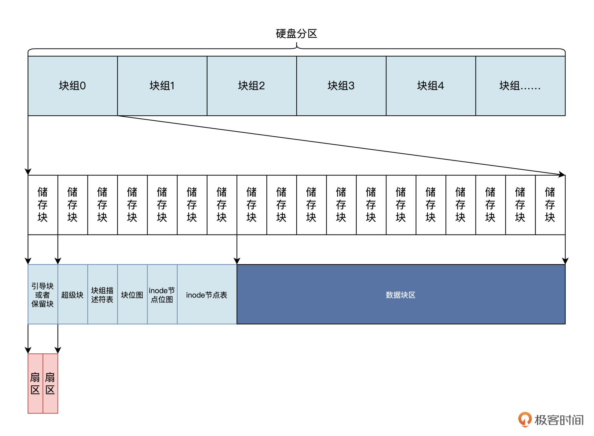
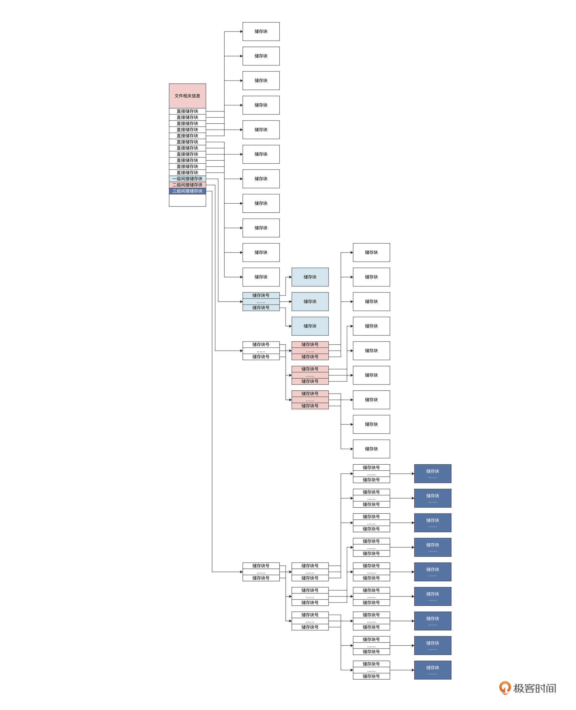
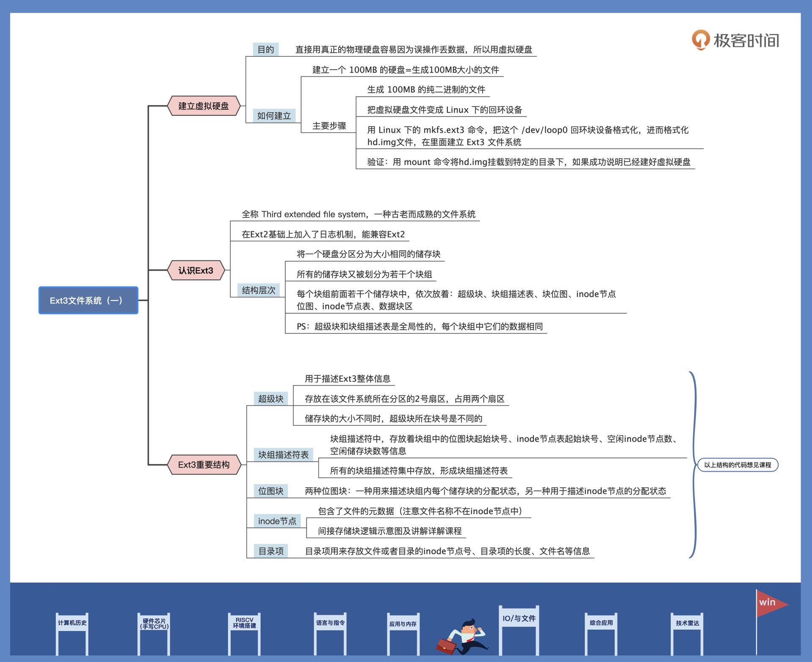

- 00 开篇词 练好基本功，优秀工程师成长第一步.md.html
- 01 CISC & RISC：从何而来，何至于此.md.html
- 02 RISC特性与发展：RISC-V凭什么成为“半导体行业的Linux”？.md.html
- 03 硬件语言筑基（一）：从硬件语言开启手写CPU之旅.md.html
- 04 硬件语言筑基（二）_ 代码是怎么生成具体电路的？.md.html
- 05 指令架构：RISC-V在CPU设计上到底有哪些优势？.md.html
- 06 手写CPU（一）：迷你CPU架构设计与取指令实现.md.html
- 07 手写CPU（二）：如何实现指令译码模块？.md.html
- 08 手写CPU（三）：如何实现指令执行模块？.md.html
- 09 手写CPU（四）：如何实现CPU流水线的访存阶段？.md.html
- 10 手写CPU（五）：CPU流水线的写回模块如何实现？.md.html
- 11 手写CPU（六）：如何让我们的CPU跑起来？.md.html
- 12 QEMU：支持RISC-V的QEMU如何构建？.md.html
- 13 小试牛刀：跑通RISC-V平台的Hello World程序.md.html
- 14 走进C语言：高级语言怎样抽象执行逻辑？.md.html
- 15 C与汇编：揭秘C语言编译器的“搬砖”日常.md.html
- 16 RISC-V指令精讲（一）：算术指令实现与调试.md.html
- 17 RISC-V指令精讲（二）：算术指令实现与调试.md.html
- 18 RISC-V指令精讲（三）：跳转指令实现与调试.md.html
- 19 RISC-V指令精讲（四）：跳转指令实现与调试.md.html
- 20 RISC-V指令精讲（五）：原子指令实现与调试.md.html
- 21 RISC-V指令精讲（六）：加载指令实现与调试.md.html
- 22 RISC-V指令精讲（七）：访存指令实现与调试.md.html
- 23 内存地址空间：程序中地址的三种产生方式.md.html
- 24 虚实结合：虚拟内存和物理内存.md.html
- 25 堆&栈：堆与栈的区别和应用.md.html
- 26 延迟分配：提高内存利用率的三种机制.md.html
- 27 应用内存管理：Linux的应用与内存管理.md.html
- 28 进程调度：应用为什么能并行执行？.md.html
- 29 应用间通信（一）：详解Linux进程IPC.md.html
- 30 应用间通信（二）：详解Linux进程IPC.md.html
- 31 外设通信：IO Cache与IO调度.md.html
- 32 IO管理：Linux如何管理多个外设？.md.html
- 33 lotop与lostat命令：聊聊命令背后的故事与工作原理.md.html
- 34 文件仓库：初识文件与文件系统.md.html
- 35 Linux文件系统（一）：Linux如何存放文件？.md.html
- 36 Linux文件系统（二）：Linux如何存放文件？.md.html
- 37 浏览器原理（一）：浏览器为什么要用多进程模型？.md.html
- 38 浏览器原理（二）：浏览器进程通信与网络渲染详解.md.html
- 39 源码解读：V8 执行 JS 代码的全过程.md.html
- 40 内功心法（一）：内核和后端通用的设计思想有哪些？.md.html
- 41 内功心法（二）：内核和后端通用的设计思想有哪些？.md.html
- 42 性能调优：性能调优工具eBPF和调优方法.md.html
- 先睹为快：迷你CPU项目效果演示.md.html
- 加餐01 云计算基础：自己动手搭建一款IAAS虚拟化平台.md.html
- 加餐02 学习攻略（一）：大数据&云计算，究竟怎么学？.md.html
- 加餐03 学习攻略（二）：大数据&云计算，究竟怎么学？.md.html
- 加餐04 谈谈容器云与和CaaS平台.md.html
- 加餐05 分布式微服务与智能SaaS.md.html
- 国庆策划01 知识挑战赛：检验一下学习成果吧！.md.html
- 国庆策划02 来自课代表的学习锦囊.md.html
- 国庆策划03 揭秘代码优化操作和栈保护机制.md.html
- 温故知新 思考题参考答案（一）.md.html
- 用户故事 我是怎样学习Verilog的？.md.html
- 结束语 心若有所向往，何惧道阻且长.md.html
- 捐赠
35 Linux文件系统（一）：Linux如何存放文件？
你好，我是LMOS。
上一节课，我们一起了解了什么是文件和文件系统。接下来的两节课，我们继续深入学习Linux上的一个具体的文件系统——Ext3，搞清楚了文件究竟是如何存放的。
这节课我会带你建立一个虚拟硬盘，并在上面建立一个文件系统。对照代码实例，相信你会对Ext3的结构有一个更深入的认识。课程配套代码，你可以从这里下载。话不多说，我们开始吧。
建立虚拟硬盘
要想建立文件系统就得先有硬盘，我们直接用真正的物理硬盘非常危险，搞不好数据就会丢失。所以，这里我们选择虚拟硬盘，在这个虚拟硬盘上操作，这样怎么折腾都不会有事。
其实我们是用Linux下的一个文件来模拟硬盘的，写入硬盘的数据只是写入了这个文件中。所以建立虚拟硬盘，就相当于生成一个对应的文件。比如，我们要建立一个 100MB 的硬盘，就意味着我们要生成 100MB 的大文件。
下面我们用 Linux 下的 dd 命令（用指定大小的块拷贝一个文件，并在拷贝的同时进行指定的转换）生成 100MB 的纯二进制的文件（就是向 1～100M 字节的文件里面填充为 0 ），代码如下所示：
dd bs=512 if=/dev/zero of=hd.img count=204800
;bs:表示块大小，这里是512字节
;if：表示输入文件，/dev/zero就是Linux下专门返回0数据的设备文件，读取它就返回0
;of：表示输出文件，即我们的硬盘文件
;count：表示输出多少块
下面我们就要在虚拟硬盘上建立文件系统了，所谓建立文件系统就是对虚拟硬盘放进行格式化。可是，问题来了——虚拟硬盘毕竟是个文件，如何让 Linux 在一个文件上建立文件系统呢？
这个问题我们要分成两步来解决。
第一步，把虚拟硬盘文件变成 Linux 下的回环设备，让 Linux 以为这是个设备。下面我们用 losetup 命令，将 hd.img 这个文件变成 Linux 的回环设备，代码如下：
sudo losetup /dev/loop0 hd.img
第二步，由于回环设备就是 Linux 下的块设备，用户可以将其看作是硬盘、光驱或软驱等设备，并且可以用mount命令把该回环设备挂载到特定目录下。这样我们就可以用 Linux 下的 mkfs.ext3 命令，把这个 /dev/loop0 回环块设备格式化，进而格式化hd.img文件，在里面建立 Ext3 文件系统。
sudo mkfs.ext3 -q /dev/loop0
需要注意的是，loop0可能已经被占用了，我们可以使用loop1、loop2等，你需要根据自己电脑的情况处理。
我们可以用 mount 命令将hd.img挂载到特定的目录下，如果命令执行成功，就能验证我们虚拟硬盘上的文件系统成功建立。命令如下所示：
sudo mount -o loop ./hd.img ./hdisk/ ;挂载硬盘文件
这行代码的作用是，将hd.img这个文件使用 loop 模式挂载在 ./hdisk/目录之下，通过这个hdisk目录，就能访问到hd.img虚拟硬盘了。并且，我们还可以用常用的mkdir、touch命令在这个虚拟硬盘中建立目录和文件。
Ext3文件系统结构
我们建好了硬盘，对其进行了格式化，也在上面建立了Ext3文件系统。下面我们就来研究一下Ext3文件系统的结构。
Ext3文件系统的全称是Third extended file system，已经有20多年的历史了，是一种古老而成熟的文件系统。Ext3在Ext2基础上加入了日志机制，也算是对Ext2文件系统的扩展，并且也能兼容Ext2。Ext3是在发布Linux2.4.x版本时加入的，支持保存上TB的文件，保存的文件数量由硬盘容量决定，还支持高达255字节的文件名。
Ext3的内部结构是怎样的呢？Ext3将一个硬盘分区分为大小相同的储存块，每个储存块可以是2个扇区、4个扇区、8个扇区，分别对应大小为1KB、2KB、4KB。
所有的储存块又被划分为若干个块组，每个块组中的储存块数量相同。每个块组前面若干个储存块中，依次放着：超级块、块组描述表、块位图、inode节点位图、inode节点表、数据块区。需要注意的是，超级块和块组描述表是全局性的，在每个块组中它们的数据是相同的。
我再帮你画一个逻辑结构图，你就容易理解了，如下所示：

上图中，第1个储存块是用于安装引导程序，或者也可以保留不使用的。超级块占用一个储存块，在第2个储存块中，即储存块1，储存块的块号是针对整个分区编码的，从0开始。其中的块组描述符表、块位图、inode节点位图、inode节点表的占用大小，是根据块组多少以及块组的大小动态计算的。
下面我们分别讨论这些重要结构。
Ext3文件系统的超级块
我们首先要探讨的是Ext3文件系统的超级块，它描述了Ext3的整体信息，例如有多少个inode节点、多少个储存块、储存块大小、第一个数据块号是多少，每个块组多少个储存块等。
Ext3文件系统的超级块存放在该文件系统所在分区的2号扇区，占用两个扇区。当储存块的大小不同时，超级块所在块号是不同的。
比如说，当储存块大小为1KB时，0号块是引导程序或者保留储存块，超级块起始于1号块储存；当块大小为2KB时，超级块起始于0号储存块，其位于0号储存块的后1KB，前1KB是引导程序或者保留；当储存块大小为4KB时，超级块也起始于0号储存块，其位于0号块的1KB处。总之，超级块位于相对于分区的2号~3号扇区，这一点是固定的。
下面我们看一看用C语言定义的超级块，代码如下所示：
struct ext3_super_block {
__le32 s_inodes_count; //inode节点总数
__le32 s_blocks_count; // 储存块总数
__le32 s_r_blocks_count; // 保留的储存块数
__le32 s_free_blocks_count;// 空闲的储存块数
__le32 s_free_inodes_count;// 空闲的inode节点数
__le32 s_first_data_block; // 第一个数据储存块号
__le32 s_log_block_size; // 储存块大小
__le32 s_log_frag_size; // 碎片大小
__le32 s_blocks_per_group; // 每块组包含的储存块数
__le32 s_frags_per_group; // 每块组包含的碎片
__le32 s_inodes_per_group; // 每块组包含的inode节点数
__le32 s_mtime; // 最后挂载时间
__le32 s_wtime; // 最后写入时间
__le16 s_mnt_count; // 挂载次数
__le16 s_max_mnt_count; // 最大挂载次数
__le16 s_magic; // 魔数
__le16 s_state; // 文件系统状态
__le16 s_errors; // 错误处理方式
__le16 s_minor_rev_level; // 次版本号
__le32 s_lastcheck; // 最后检查时间
__le32 s_checkinterval; // 强迫一致性检查的最大间隔时间
__le32 s_creator_os; // 建立文件系统的操作系统
__le32 s_rev_level; // 主版本号
__le16 s_def_resuid; // 默认用户保留储存块
__le16 s_def_resgid; // 默认用户组保留储存块
__le32 s_first_ino; // 第一个非保留inode节点号
__le16 s_inode_size; // inode节点大小
__le16 s_block_group_nr; // 当前超级块所在块组
__le32 s_feature_compat; // 兼容功能集
__le32 s_feature_incompat; // 非兼容功能集
__le32 s_feature_ro_compat;// 只读兼容功能集
__u8 s_uuid[16]; // 卷的UUID（全局ID）
char s_volume_name[16]; // 卷名
char s_last_mounted[64]; // 文件系统最后挂载路径
__le32 s_algorithm_usage_bitmap; // 位图算法
//省略了日志相关的字段
};
以上的代码中我省略了日志和预分配的相关字段，而__le16 __le32，在x86上就是u16、u32类型的数据。le表示以小端字节序储存数据，定义成这样，是为了大小端不同的CPU可以使用相同文件系统，或者已经存在的文件系统的前提下，方便进行数据转换。
Ext3文件系统的块组描述符表
接着我们来看看Ext3文件系统的块组描述符，里面存放着用来描述块组中的位图块起始块号、inode节点表起始块号、空闲inode节点数、空闲储存块数等信息，文件系统中每个块组都有这样的一个块组描述符与之对应。所有的块组描述符集中存放，就形成了块组描述符表。
块组描述符表的起始块号位于超级块所在块号的下一个块，在整个文件系统中，存有很多块组描述符表的备份，存在的方式与超级块相同。
下面我们看一看用C语言定义的单个块组描述符结构，如下所示：
struct ext3_group_desc
{
__le32 bg_block_bitmap; // 该块组位图块起始块号
__le32 bg_inode_bitmap; // 该块组inode节点位图块起始块号
__le32 bg_inode_table; // 该块组inode节点表起始块号
__le16 bg_free_blocks_count; // 该块组的空闲块
__le16 bg_free_inodes_count; // 该块组的空闲inode节点数
__le16 bg_used_dirs_count; // 该块组的目录计数
__u16 bg_pad; // 填充
__le32 bg_reserved[3]; // 保留未用
};
对照上述代码，我们可以看到，多个ext3_group_desc结构就形成了块组描述符表，而__le16 __le32类型和超级块中的相同。如果想知道文件系统中有多少个块组描述符，可以通过超级块中总块数和每个块组的块数来进行计算。
Ext3文件系统的位图块
接下来要说的是Ext3文件系统的位图块，它非常简单，每个块组中有两种位图块：一种用来描述块组内每个储存块的分配状态，另一种用于描述inode节点的分配状态。
位图块中没有什么结构，就是位图数据，即块中的每个字节都有八个位。每个位表示一个相应对象的分配状态，该位为0时，表示相应对象为空闲可用状态，为1时则表示相应对象是占用状态。例如位图块中第一个字节，表示块组0~7号储存块的分配状态；第二个字节，表示块组8~15号储存块的分配状态 ……依次类推。位图块的块号可以从块组描述符中得到。
Ext3文件系统的inode节点
接下来，我们再深入研究一下inode节点。上节课我们提过，inode节点用来存放跟文件相关的所有信息，但是文件名称却不在inode节点之中，文件名称保存在文件目录项中。
inode节点中包含了文件模式、文件链接数、文件大小、文件占用扇区数、文件的访问和修改的时间信息、文件的用户ID、文件的用户组ID、文件数据内容的储存块号等，这些重要信息也被称为文件的元数据。
那么，用C语言如何定义单个inode节点结构呢？代码如下所示：
struct ext3_inode {
__le16 i_mode; // 文件模式
__le16 i_uid; // 建立文件的用户
__le32 i_size; // 文件大小
__le32 i_atime; // 文件访问时间
__le32 i_ctime; // 文件建立时间
__le32 i_mtime; // 文件修改时间
__le32 i_dtime; // 文件删除时间
__le16 i_gid; // 建立文件的用户组
__le16 i_links_count; // 文件的链接数
__le32 i_blocks; // 文件占用的储存块 */
__le32 i_flags; // 文件标志
union {
struct {
__u32 l_i_reserved1;
} linux1;
struct {
__u32 h_i_translator;
} hurd1;
struct {
__u32 m_i_reserved1;
} masix1;
} osd1; //操作系统依赖1
__le32 i_block[EXT3_N_BLOCKS];// 直接块地址
__le32 i_generation; // 文件版本
__le32 i_file_acl; // 文件扩展属性块
__le32 i_dir_acl; // 目录扩展属性块
__le32 i_faddr; // 段地址
union {
struct {
__u8 l_i_frag; //段号
__u8 l_i_fsize; //段大小
__u16 i_pad1;
__le16 l_i_uid_high;
__le16 l_i_gid_high;
__u32 l_i_reserved2;
} linux2;
struct {
__u8 h_i_frag; //段号
__u8 h_i_fsize; //段大小
__u16 h_i_mode_high;
__u16 h_i_uid_high;
__u16 h_i_gid_high;
__u32 h_i_author;
} hurd2;
struct {
__u8 m_i_frag; //段号
__u8 m_i_fsize; //段大小
__u16 m_pad1;
__u32 m_i_reserved2[2];
} masix2;
} osd2; //操作系统依赖2
__le16 i_extra_isize;
__le16 i_pad1;
};
这就是inode节点，它包含文件的所有信息。文件的数据内容的储存块号保存在i_block中，这个i_block数组前十二元素保存的是1~12这12个储存块号，第十三个元素开始保存的是一级间接储存块块号、二级间接储存块块号、三级间接储存块块号。
那问题来了，什么是间接储存块？我给你画幅图，你就明白了。

由上图可知，一个inode节点中有11个直接储存块，其中存放的是块号，能直接索引11个储存块。
如果每个储存块大小是1KB的话，可以保存11KB的文件数据；当文件内容大于11KB时，就要用到一级间接储存块。
这时，一级间接储存块里的块号索引的储存块中不是文件数据，而是储存的指向储存块的块号，它可以储存1024/4个块号，即可索引1024/4个储存块。二级、三级间接块则依次类推，只不过级别更深，保存的块号就更多，能索引的储存块就更多，储存文件的数据量就更大。
Ext3文件系统的目录项
讲到这里，我们已经对Ext3文件系统若干结构都做了梳理，现在你应该对Ext3文件系统如何储存文件有了一定认识。
可是文件系统中还有许多文件目录，文件目录是怎么处理的呢？
Ext3文件系统把目录当成了一种特殊的文件，即目录文件，目录文件有自己的inode节点，能读取其中数据。在目录文件的数据中，保存的是一系列目录项，目录项用来存放文件或者目录的inode节点号、目录项的长度、文件名等信息。
下面我们看一看，用C语言定义的单个目录项结构长什么样：
#define EXT3_NAME_LEN 255
struct ext3_dir_entry {
__le32 inode; // 对应的inode节点号
__le16 rec_len; // 目录项长度
__u8 name_len; // 文件名称长度
__u8 file_type; // 文件类型：文件、目录、符号链接
char name[EXT3_NAME_LEN];// 文件名
};
目录项结构大小不是固定不变的，这是由于每个文件或者目录的名称，不一定是255个字符，一般情况下是少于255个字符，这就导致name数组不必占用完整的空间。所以目录项是动态变化，需要结构中的rec_len字段，才能知道目录项的真实大小。
重点回顾
今天的课程我们就结束了，我们一起回顾一下学习的重点。
首先为了体验一下怎么建立文件系统，同时为了避免我们在物理硬盘的误操作导致丢失数据，所以我们用文件方式建立了一个虚拟硬盘，并在上面格式化了Ext3文件系统。
接着我们从逻辑上了解Ext3文件系统，重点了解了它的几个重要结构：超级块用于保存文件系统全局信息了；块组描述符用于表示硬盘的一个个块组；位图用于分配储存块和inode节点；inode节点用于保存文件的元数据，还有文件数据块的块号；最后还有目录结构，用来存放者文件或者目录的inode节点号、目录项的长度、文件名等信息。
这节课的导图如下所示，供你参考：

下节课我们继续聊聊怎么读取文件系统的文件，敬请期待。
思考题
请问Ext3文件系统的超级块放在硬盘分区的第几个扇区中。
欢迎你在留言区记录自己的收获，或者向我提问。如果觉得这节课还不错，别忘了分享给身边的朋友。
© 2019 - 2023 Liangliang Lee. Powered by gin and hexo-theme-book.